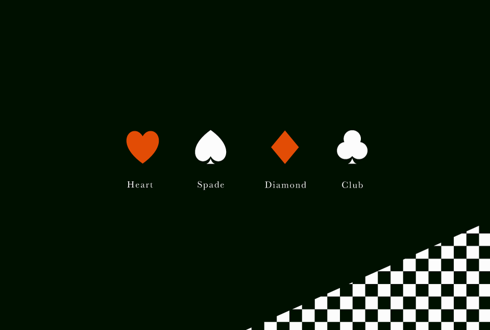
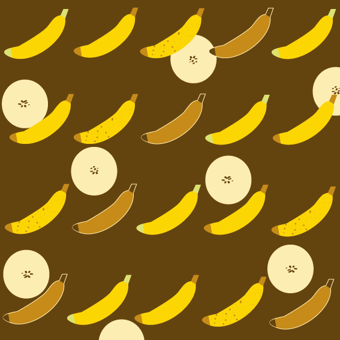
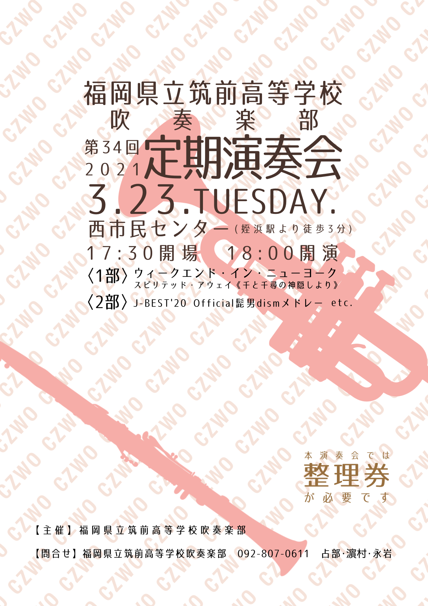
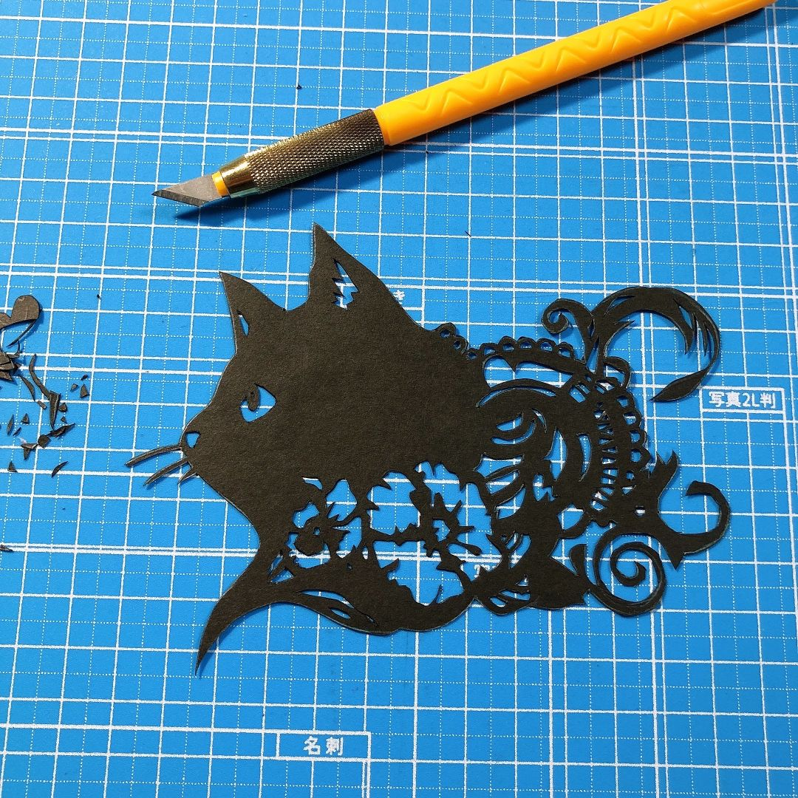
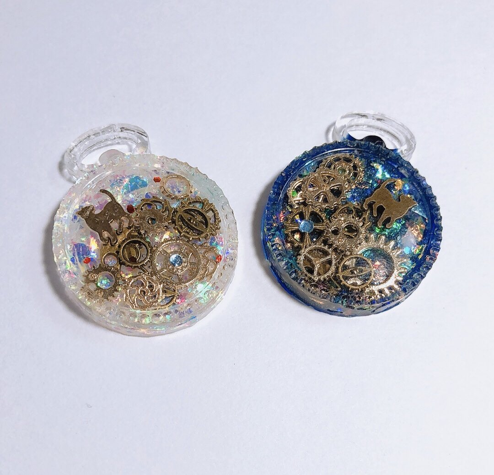

WORKS
square
一年次の課題で制作した作品
使用ソフト：Adobe After Effects 2022
trump

一年次の課題で制作した作品
使用ソフト：Adobe Illustrator 2022
bananas

一年次の課題で制作した作品
使用ソフト：Adobe Illustrator 2022
poster

高校二年生の時、所属していた吹奏楽部が開催した定期演奏会のポスター
使用ソフト：ibis Paint X
cat

コロナの自粛期間中、おうち時間で制作した切り絵
使用ツール：デザインナイフ (100円ショップで購入)
watches

高校一年生の時、趣味のレジンで歌い手ユニット After the Rain をモチーフに制作した作品
使用ツール：UVレジン, シリコンモールド, 封入パーツ
(レジン液のみ手芸屋で購入, パーツ等は100円ショップのもの)